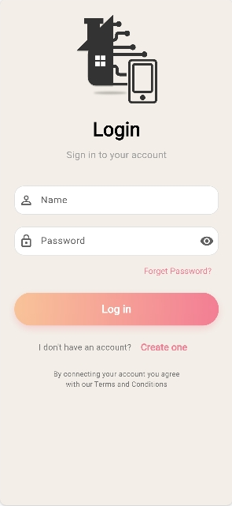

Official Companion App • v2.2 Guide
HASS Mobile Companion.
HASS Mobile Companion.
Complete Interface User Manual.
Master every screen, workflow, and hardware-integration feature in the native HASS mobile application.
Chapter 01
Authentication & Account Provisioning
Create a local authenticated profile or sign in to your encrypted controller instance.
Initial Profile Registration
Tap Create one to access the registration screen.Encrypted Quick Login
Subsequent logins require only your administrator credentials.

Chapter 02
Home Dashboard & Real-Time Telemetry
The central command cockpit displaying active load states and onboard DHT22 readings.
Microclimate & Device State Cards
Active devices and ambient temperature at a glance.Master Quick Controls & Slot Cards
Toggle all connected terminals using master buttons.

Chapter 03
Hardware Slot Pairing & Device Setup
Configure any of 4 independent physical relay outputs (Slots 1 through 4).
The 4-Channel Terminal Mapping
Slots map to terminals 32, 33, 25 and 26. Choose icon, category, and label for each device..png)

Chapter 04
Device Management & Status Inspection
Detailed channel inspections, live wattage metering and one-tap master control.
Inspection Breakdown
Terminal bits, relay state and power metering shown per channel.


Chapter 05
Advanced Local Automation Suite
HASS delivers three distinct local automation mechanisms.


Autonomous Local Processing Engine
Unlike cloud-dependent apps, rules execute on the ESP32 itself, 24 hours a day, 365 days a year.Chapter 06
App Navigation, Settings & Personalization
Explore the unified navigation drawer, multilingual support and system theme preferences.
Quick Access Navigation
Tap the hamburger menu in the top-left to expand the slide-out drawer.Board Pairing & System Preferences
Link the controller, switch language (English / Arabic) and theme.